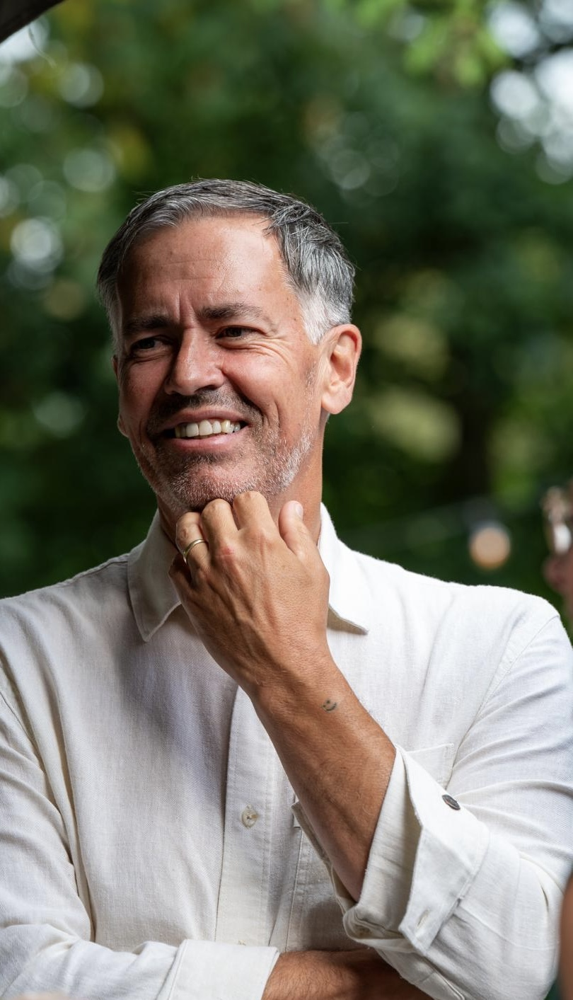
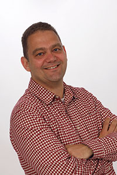

Excellence with Passion is in 2015 opgericht door Rob Brauers en Joeri de Beer — niet als bureau met een breed aanbod, maar vanuit een gedeelde overtuiging: organisaties verbeteren pas duurzaam als processen, leren en leiderschap tegelijk in beweging zijn. Die overtuiging heet de Passion Swirl.

Luchtvaart Technische Bedrijfskunde — TU DelftRob implementeert verbeterprogramma's sinds 1997 — in industrie en glastuinbouw, van werkvloer tot directie. Zijn kracht zit in het snel en grondig doorgronden van processen én mensen. Hij werkt vanuit rust en nabijheid: vragen stellen in plaats van oplossen, ruimte maken voor wat de organisatie zelf al weet maar nog niet ziet.

Werktuigbouwkunde & Technische Bedrijfskunde — HTS TilburgJoeri begon zijn loopbaan bij Goodyear, waar hij groeide van CI-manager tot manufacturing manager. Hij behaalde certificaten als Lean Master en Master Black Belt. Zijn aanpak draait om meesterschap en zingeving: mensen groeien en resultaten verbeteren zijn geen tegenpolen — ze versterken elkaar. Je hoeft tenslotte niet ziek te zijn om beter te worden.
Naast ons tweeën werken wij samen met een vaste kring van partners voor specifieke vraagstukken — zodat wij altijd de juiste kennis en ervaring kunnen inzetten die uw situatie vraagt.